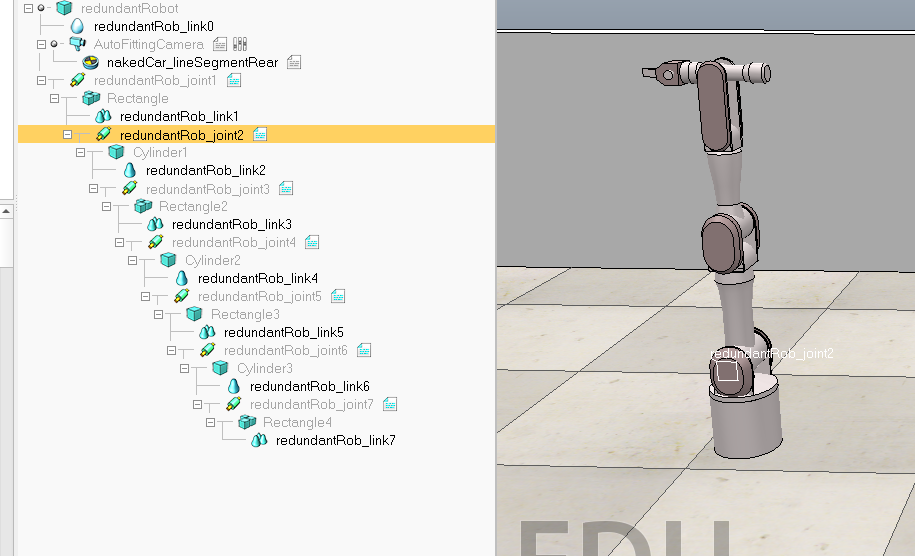
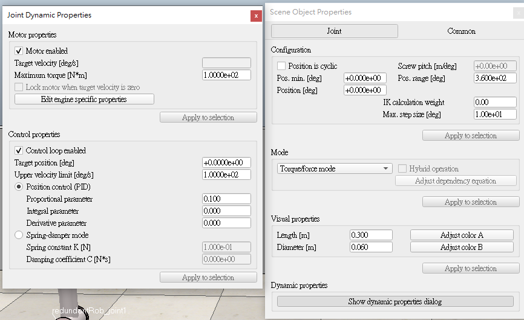

Team1 W3 <<
Previous Next >> Difficulties and debugging
Team 2
Programming control mechanicalarm
Used lua api to contral mechanical arm in CoppeliaSim
I edited all joints separately

This is the parameter of the joint

threadFunction=function()
while sim.getSimulationState()~=sim.simulation_advancing_abouttostop do
-- Read the keyboard messages (make sure the focus is on the main window, scene view):
message,auxiliaryData=sim.getSimulatorMessage()
while message~=-1 do
if (message==sim.message_keypress) then
if (auxiliaryData[1]==97) then
-- d key
if(o < i*10) then
o = o+i
velocity=velocity+0.11
torque=torque+0.1
hammer_back = 0
end
end
if (auxiliaryData[1]==100) then
-- a key
if(o > -i*10) then
o = o-i
velocity=velocity-0.11
torque=torque-0.1
hammer_back = 1
end
end
end
message,auxiliaryData=sim.getSimulatorMessage()
end
-- We take care of setting the desired hammer position:
if hammer_back == 1
then
sim.setJointPosition(joint, -1, orientation)
--sim.setObjectPosition(hammer,-1, position)
end
sim.setJointTargetPosition(joint, velocity)
--sim.setJointForce(joint,torque)
-- Since this script is threaded, don't waste time here:
sim.switchThread() -- Resume the script at next simulation loop start
end
end
-- Put some initialization code here:
-- Retrieving of some handles and setting of some initial values:
i = 1
o = i*1
joint=sim.getObjectHandle('redundantRob_joint1')
hammer=sim.getObjectHandle('Rectangle')
velocity=0
hammer_back=0
torque=0
sliding = 0
orientation=sim.getJointPosition(joint, -1)
position=sim.getObjectPosition(hammer,-1)
-- Here we execute the regular thread code:
res,err=xpcall(threadFunction,function(err) return debug.traceback(err) end)
if not res then
sim.addStatusbarMessage('Lua runtime error: '..err)
end
-- Put some clean-up code here:
Team1 W3 <<
Previous Next >> Difficulties and debugging